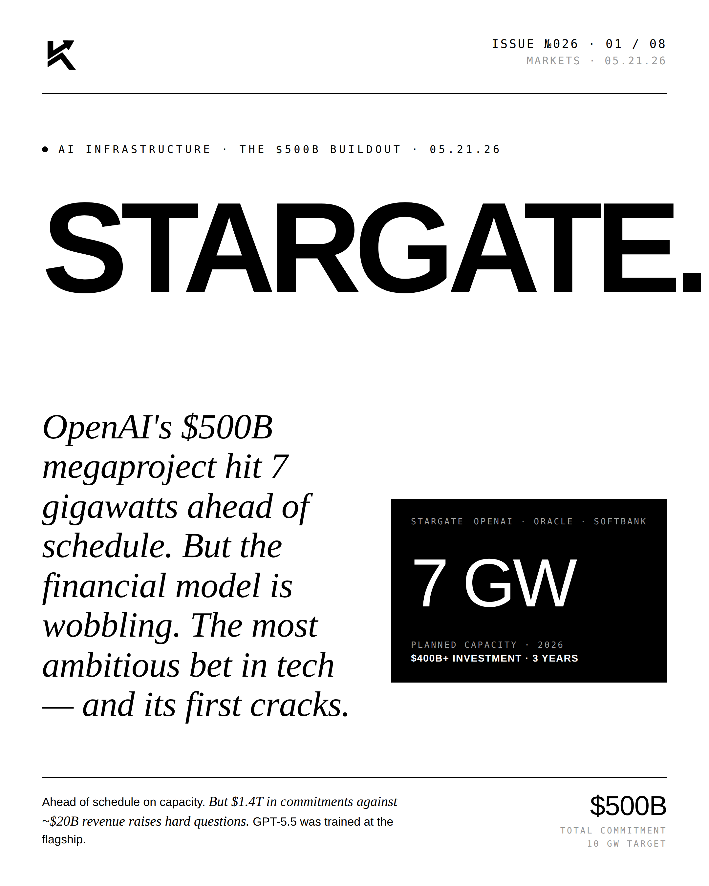
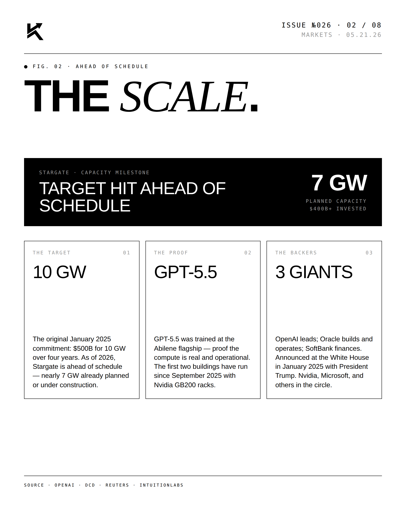
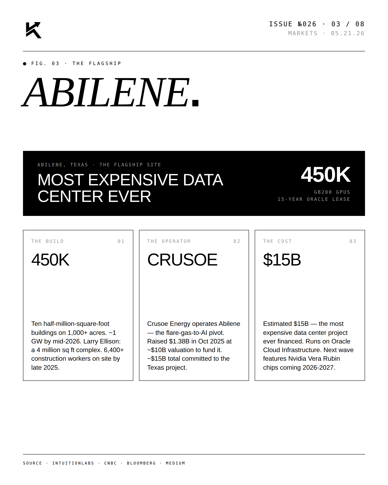
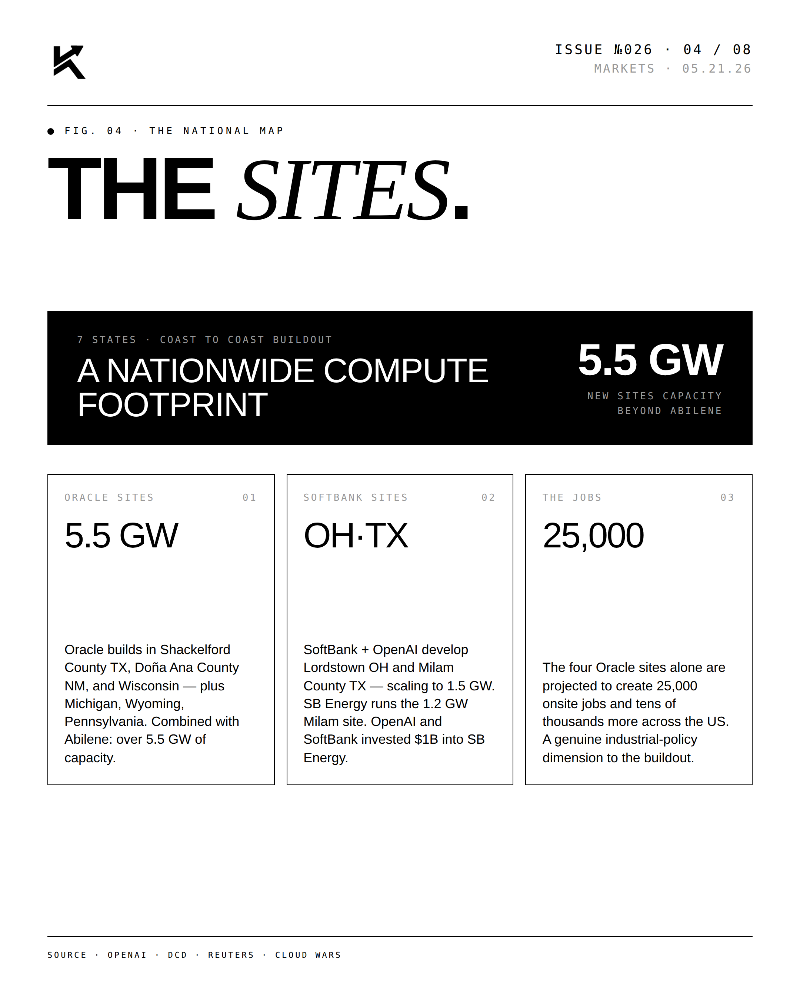
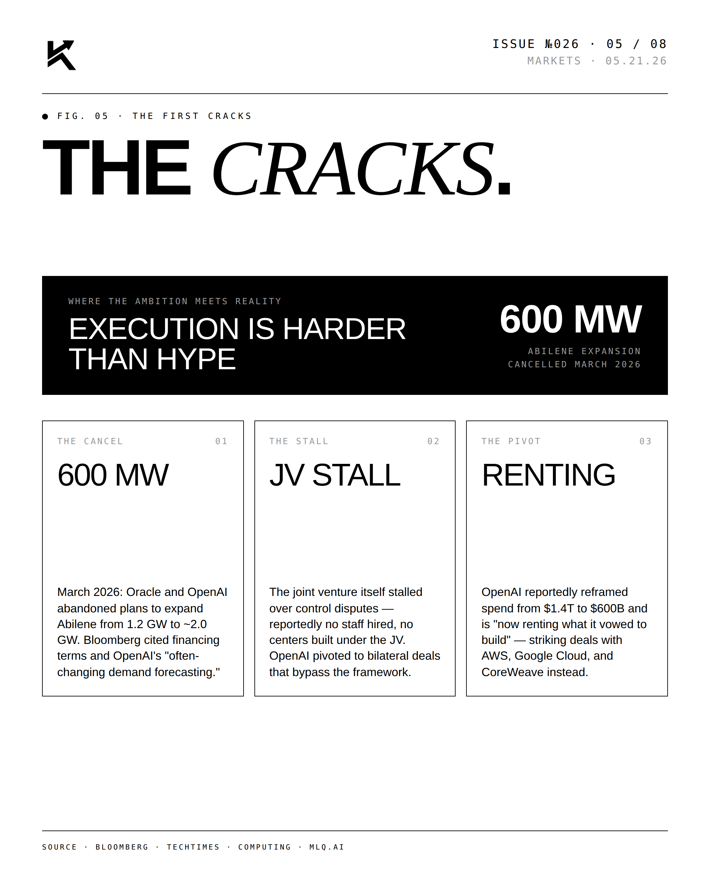
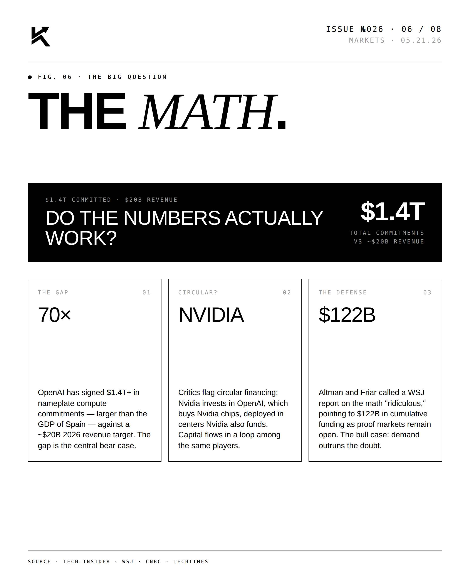
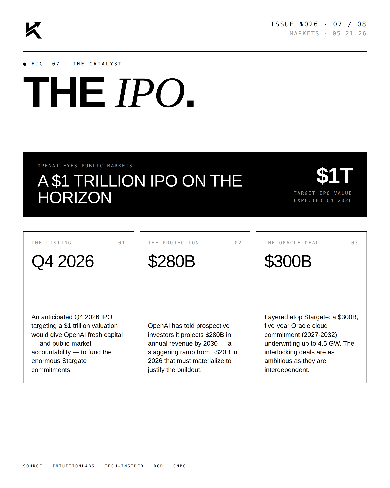
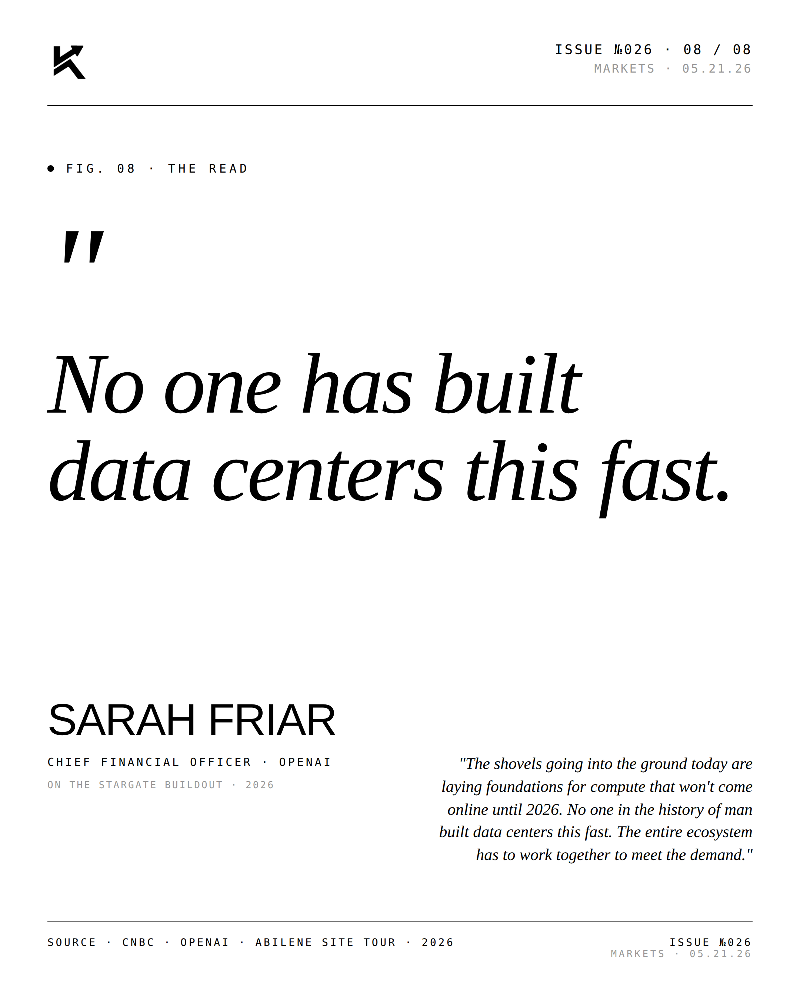

Stargate.
OpenAI's $500B megaproject hit 7 gigawatts ahead of schedule. But the financial model is wobbling — $1.4T in commitments against ~$20B revenue. The most ambitious bet in tech, and its first cracks.

The Lead.
Stargate — OpenAI, Oracle, and SoftBank — targets 10 GW and $400B+ over three years. The Abilene, Texas flagship is operated by Crusoe (the flare-gas-to-AI pivot), runs on Oracle Cloud Infrastructure, and is on track to be the most expensive data center ever financed at roughly $15B. GPT-5.5 was trained there. Ahead on capacity; the open question is the revenue beneath the commitments.






"No one has built
data centers this fast."SARAH FRIARChief Financial Officer · OpenAI · 2026
"The shovels going into the ground today are laying foundations for compute that won't come online until 2026. No one in the history of man built data centers this fast. The entire ecosystem has to work together to meet the demand." — Sarah Friar, OpenAI.

Disclosure
The author is a Limited Partner in 1789 Capital, which holds a position in Crusoe, the operator of the Abilene flagship referenced in this post. Personal commentary and editorial analysis. Not investment advice, not an offer or solicitation.